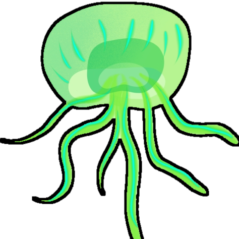

POI: Ms 5.4 In the Weeds
☐ Eliminate hazardous flora: 6
POI: Ms 1.1 Alone in the Dark
☐ Locate your starship
Reward: Advanced Mining Laser plans
POI: Ms 1.2 From the Ashes
☐ Install Advanced Mining Laser
Copper ×120
Hermetic Seal ×1
Metal Plating ×2
Reward: Personal Refiner MK2 plans
POI: Ms 1.3 Self-Reliance
☐ Install Personal Refiner MK2
Condensed Carbon ×110
Metal Plating ×2
Oxygen ×140
POI: Ms 2.3 Make Do and Mend
☐ Repair Multi-Tool and Starship
` Refine: Silicate Powder ×1 + Di-hydrogen ×1 → Deuterium ×1
Starship
Launch Thruster(R)
Magnetised Ferrite ×50
Deuterium ×45
Pulse Engine(R)
Hermetic Seal ×1
Metal Plating ×1
Rusted Circiut
Copper ×95
Hydraulic Damage
Condensed Carbon ×75
Corroded Tanks
Ion Battery ×1
Oxygen ×35
Hull Fracture
Magnetised Ferrite ×80
Multi-Tool
Burnt-Out Terminal
Sodium Nitrate ×80
Failed Resistor
Cobalt ×50
Corrupt Module
Chromatic Metal ×60
Loom Damage
Carbon Nanotube ×1
Hermetic Seal ×1
POI: Ms 5.2 Still They Hunger
☐ Purge Hungering Tendrils: 5
POI: Ms 1.4 An Unlikely Escape
☐ Leave the planet
Life Support Gel ×2
Ion Battery ×8
Creature Pellets ×2
Ammunition ×3
Xillup
POI: Ms 1.7 Worlds of Rock & Ice
☐ Destroy Asteroids: 30
` Note: Tritium ×25 + Condensed Carbon ×20 → Antimatter ×1
POI: Ms 1.5 Lights Out
☐ Visit the Space Station
Reward: Signal Booster
Hyperdrive plans
Chromatic Metal ×125
Microprocessor ×5
Xillup // Orey XII
☐ Find Heptaploid Wheat → Refined Flour
Fauna:7 Frequent
POI: Ms 3.2 Call of the Void
☐ Extract Radiant Shards: 1
Reward: Warp Hypercore plans
☐ Mine: Activated Copper ×64, Atlantideum ×99
POI: Ms 3.5 Abandonment +1.57, -160.00
☐ Restore a Crashed Ship
Hermetic Seal ×1
Metal Plating ×1
Tip: Select Ms then use Signal Booster
` Reward: Powerful Hyperdrive upgrade ×2
Kasholman
POI: Ms 1.6 Independent People
☐ Warp to new system
Kasholman // Xahilton Prime
Fauna:9 Generous
☐ POI: Ms 1.8 ℛ1 Observatory +27.52, +34.70
POI: Ms 2.5 Stirring the Nest
☐ Steal Whispering Eggs: 9
Reward: Nutrient Processor plans
Metal Plating ×2
Hermetic Seal ×1
Sodium ×25
Haz-Mat Gauntlet
Sodium Nitrate ×20
Chromatic Metal ×50
POI: Ms 5.5 By Bread Alone
☐ Cook some bread
` Refine: Mordite ×30 → Faceum ×10
Heptaploid Wheat → Refined Flour
Faceum → Wild Yeast
Refined Flour + Wild Yeast → Dough
Dough → Bread
POI: Ms 2.1 The Faintest Echo
☐ Visit a Holographic Comms Tower
POI: Ms 2.4 Time On Your Feet
☐ Explore on foot: 6,500u
Reward: Scatter Blaster
Shell Greaser
Magnetised Ferrite ×40
Ionised Cobalt ×40
Wiring Loom ×1
POI: Ms 2.6 All That You Survey
☐ Summit a mountain of 1400u
POI: Ms 4.2 Quantum Foam
☐ Earn nanites: 1600
Refine: Vile Spawn, Flesh Rope & Larval Core
Kasholman
POI: Ms 2.2 Amidst the Stars
☐ Interact with Prime Terminal in Anomaly
Reward: Mind Ark plans
Hypnotic Eye ×1
Atlantideum ×99
Activated Copper ×64
☐ Interact with Boundary Portal
Reward: Specialized Warp plans
Chromatic Metal ×250
Wiring Loom ×3
Zoongg // Ixst
Fauna:4 High
☐ POI: Ms 2.7 ℛ2 Trading Post -16.00, +98.14
Ikedag-Faks XIV
POI: Ms 3.1 To Dream of Stars
☐ Pulse until Cloud Anomaly
Ikedag-Faks XIV // Fincokla X26
Fauna:7 Bountiful
☐ POI: Ms 3.7 ℛ3 Observatory -10.07, +98.13
Ikedag-Faks XIV // Shbu
Fauna:12 Copious
POI: Ms 3.4 Bones to Dust
☐ Excavate ancient bones: 3
Ikedag-Faks XIV // Acus Tau
Fauna:11 Rich
POI: Ms 3.3 Life Reimagined
☐ Discover plants: 16
POI: Ms 4.1 Signs to Nowhere
☐ Chart waypoints: 6
Reward: Nautilon Chamber
Metal Plating ×5
Crystal Sulphide ×4
Salt ×100
High-Power Sonar
Solar Mirror ×1
Crystal Sulphide ×3
Ferrite Dust ×50
POI: Ms 4.3 Nameless History
☐ Scan for ancient ruins: 3
POI: Ms 4.4 The Lure of the Deep
☐ Harvest Crystal Sulphide: 6
POI: Ms 4.5 Fantoms Below
☐ Visit the site of a sunken freighter
Reward: Emergency Signal Scanner
POI: Ms 5.1 Not Alone
☐ Discover Creatures: 24
Ublikul-Sobro
POI: Ms 4.7 To Dream of the Freedom
☐ Pulse until Cloud Anomaly
POI: Ms 4.6 Dereliction
☐ Explore a derelict freighter
Note:
Jelly Fish only enemy!Ublikul-Sobro // Apiaeinis lawa
Fauna:9 Abundant
☐ POI: Ms 4.8 ℛ4 Crashed Freighter +71.25, -10.36
POI: Ms 5.3 Ghost in the Machine
☐ Scan for grave
POI: Ms 5.6 A Still Small Voice
☐ Look a night sky: 60s
Serkan-Run
POI: Ms 5.7 To Dream of Sleep
☐ Pulse until Cloud Anomaly
Serkan-Run // Daun
Fauna: Lacking
☐ POI: Ms 5.8 ℛ5 Crashed Ship +42.13, +90.85
Lederg-Akka ⬤
Distance: 20 ly → Kasholman
Lederg-Akka // Somerce VII
Fauna:4 Synthetic
POI: Ms 3.6 It's Alive
☐ Discover robotic lifeforms: 2
 Tip: Scan Fauna:24, Flora:16, Chart Waypoints: 6
Tip: Scan Fauna:24, Flora:16, Chart Waypoints: 6